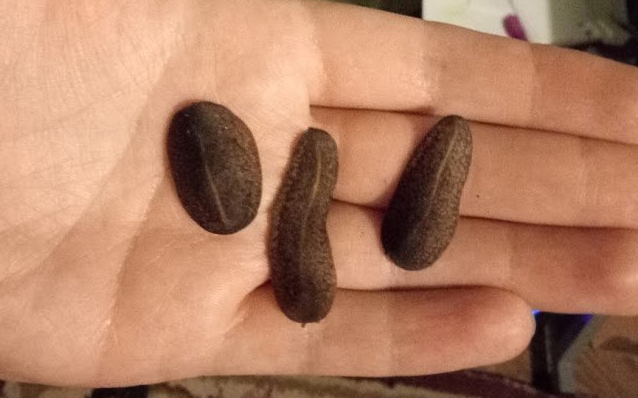
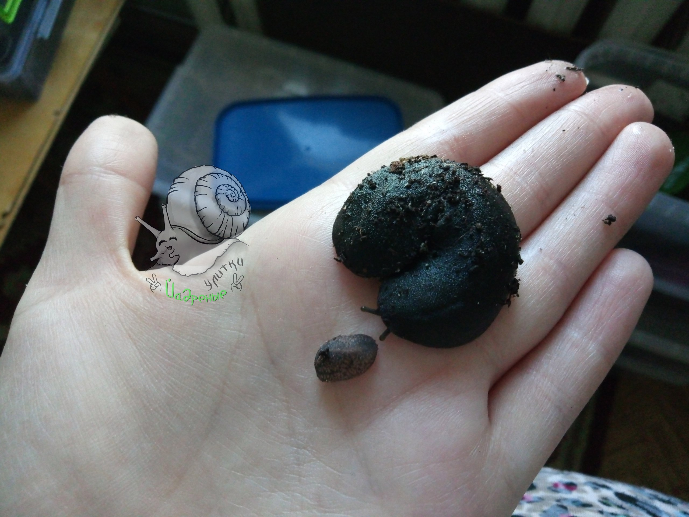
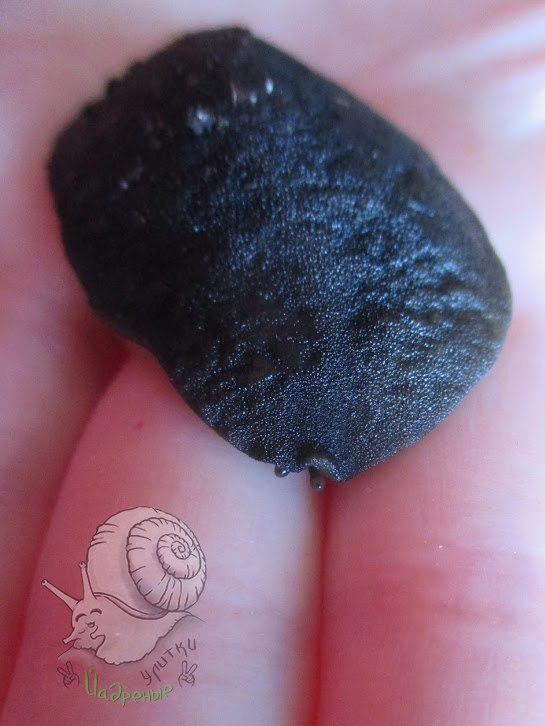
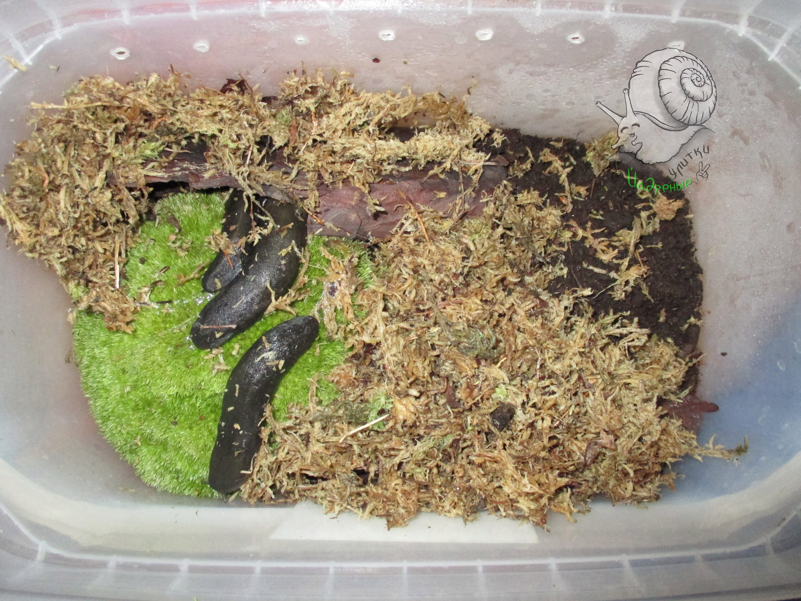
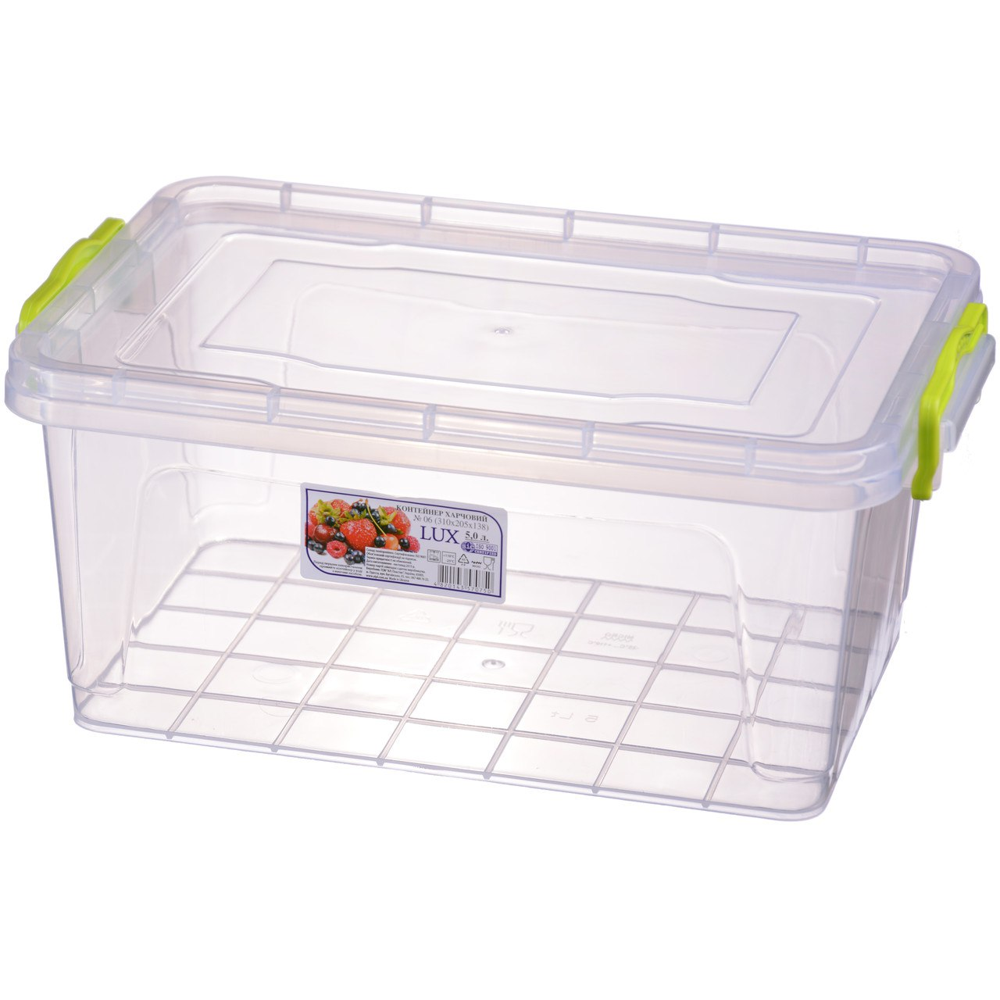
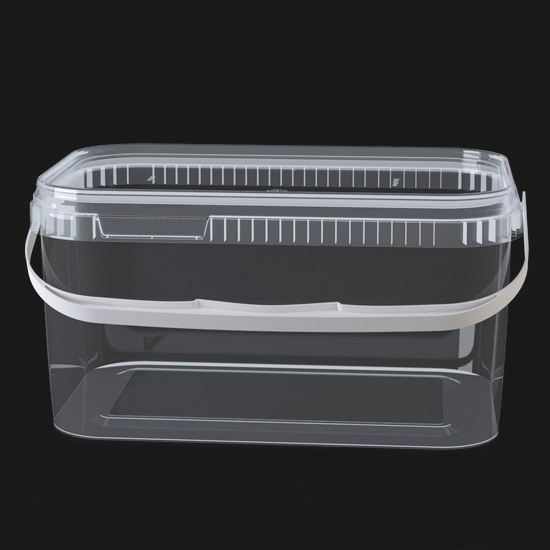
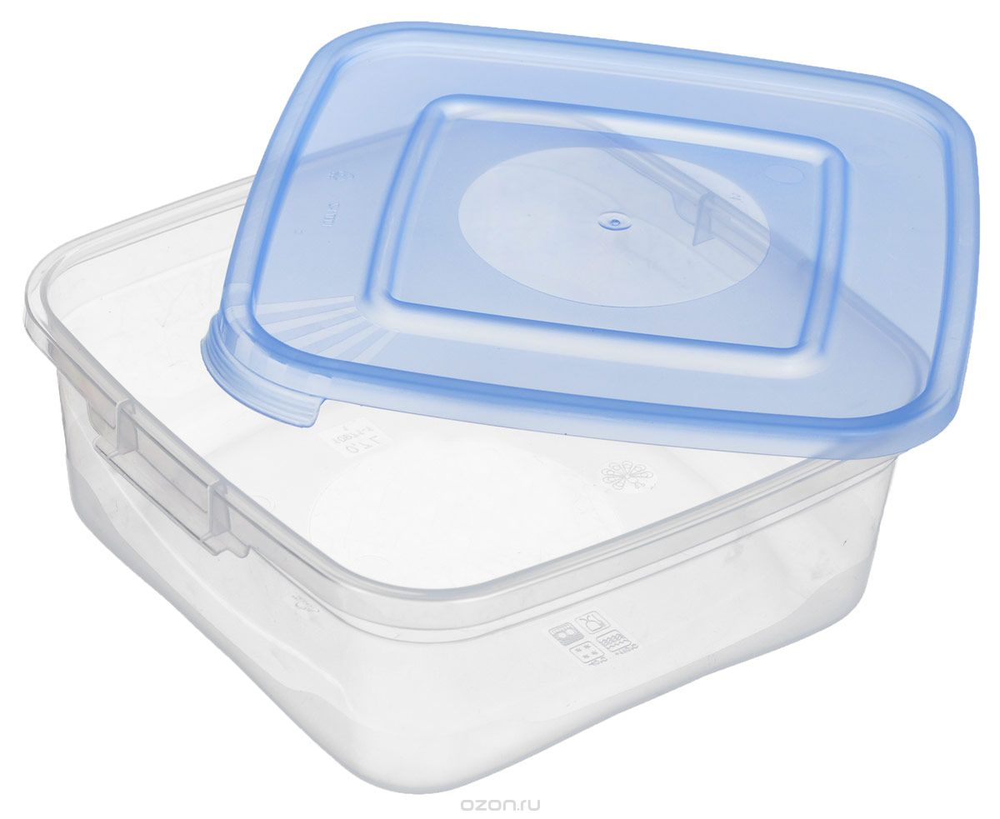

Немного о содержании слизней, точнее личный опыт и маленькие хитрости.
Вы посмотрите на этих красавцев, как их можно не любить? Они забавные, милые и ..... хитрые!
😂😂😂 Эти поганцы имеют свойство просачиваться сквозь ...... НИЧТО 😂😂😂 Буквально, я не шучу.
 |
 |
 |
 |
Поэтому:
ТЕРРАРИУМ ДЛЯ СЛИЗНЕЙ должен быть с плотно прилегающей герметичной крышкой. Вентиляция накалывается иглой мелко-мелко, в несколько рядов, создаем сеточку на больших сторонах над грунтом с обоих сторон. 3 л на особь + 2 л на последующего, + 1 л на каждого, когда их куча)) Смотрите сами как им не тесно.
Фото 1 - такой контейнер не подойдет, между крышкой и лотком есть щель, сквозь которую даже улитки умудряются просунуть головы (см альбом ржакобатл, первое фото 😂😂😂). А слизни и подавно сбегут в первую же ночь. ЛайвХак - заклеить крышку скотчем или замотать пищевой пленкой. Но это не удобно, каждый раз это разматывать и заклеивать... Лучше купить сразу контейнер (фото 2-3) без путей побега. Хотя и это не гарантия) они находят выход, как я уже писала. Волшебные...
 |
|
 |
 |
ПИТАНИЕ
Едят все то же, что и наши улитки, разрешенные продукты. С этим проблем нет, всеядны. Кормлю раз в 3 дня, за это время не доедают все, едят мало)
ПОДКОРМКИ
Кальций им нужен в постоянном доступе, растительный белок - я даю белковую зерносмесь, раз в 3 дня. Так же даю и животный белок, но они его за раз не съедают, т.к. я меняю еду раз в 3 дня, то едят его каждый день по чуть-чуть. Смертности замечено не было, я их содержу не долго, поэтому пока еще собираю инфу в этом вопросе. Некоторые киперы жалуются на смертность при отсутствии животного белка. Но многие успешно содержат и без него. Я лично за белок слизням.
ГРУНТЫ те же, разрешенные, у меня торф и мох, любят торф очень! Важно - нужны укрытия в виде кусочков коры, половинки кокоса, корягили сами придумайте что-то. Днем прячутся в укрытия. Можно добавить опада, пару листиков.
МИКРОКЛИМАТ
Температуру переносят от 20 до 28 нормально. Не замечала никаких признаков стресса. Естественно, без резких перепадов. Жили при 22 отлично, и сейчас при 27 не страдают.
Влажность высокая, 70-85%, пшикать раз в 3 дня для них отлично. При низкой влажности засохнут 😂
УБОРКА
Ежедневная - вытираем стенки контейнера от слизи, это важно, хотя бы раз в 3 дня надо это делать, лучше каждый день. Рыхлим грунт.
Генеральная - ну я пока еще ни разу не генералила, а они у меня уже больше 2 месяцев, вот не гадят они так, как улитки) культурные очень.
Достаточно протирания стенок, и рыхления грунта. Мох промываю раз в месяц или заменяю на новый, торф не трогаю.
ИТОГ - очень просты в содержании как по мне, чудные питомцы. Заводите, не пожалеете.